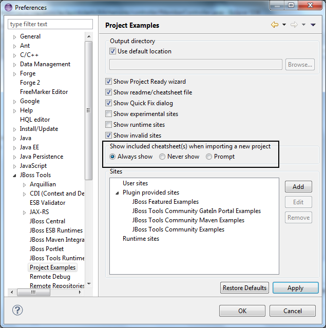

Project Examples
Project examples plugin can now open a .cheatsheet.xml or cheatsheet.xml when a project is imported.
For now this feature must be enabled manually using the Window>Preferences>JBoss Tools>Project Examples preferences page.

Related JIRA : JBIDE-14332
There is now a new action in the "Show in" context menu: the Show in Cheat Sheets action.
This allow you to easily re-open or test a cheatsheet.xml found in examples.

The action is enabled for the Java, J2EE, JBoss and PDE perspectives.
See http://screencast.com/t/gK5JggVU of this in action.
Related JIRA : JBIDE-14334
We have added new context sensitive parameterized commands for open file, show type etc. The commands can be used when creating cheatsheets.
getProjectForCheatsheet |
Used to store currentProject so you can refer to it in other commands |
openFileInEditor(path,fromLine,toLine) |
Used to open a file in an editor and highlight lines of a text from fromLine to toLine |
These commands can be used like any other command in a cheatsheet. Example of this working in a project can be found at helloworld-cheatsheet
See http://screencast.com/t/gK5JggVU.
Related JIRA : JBIDE-14333